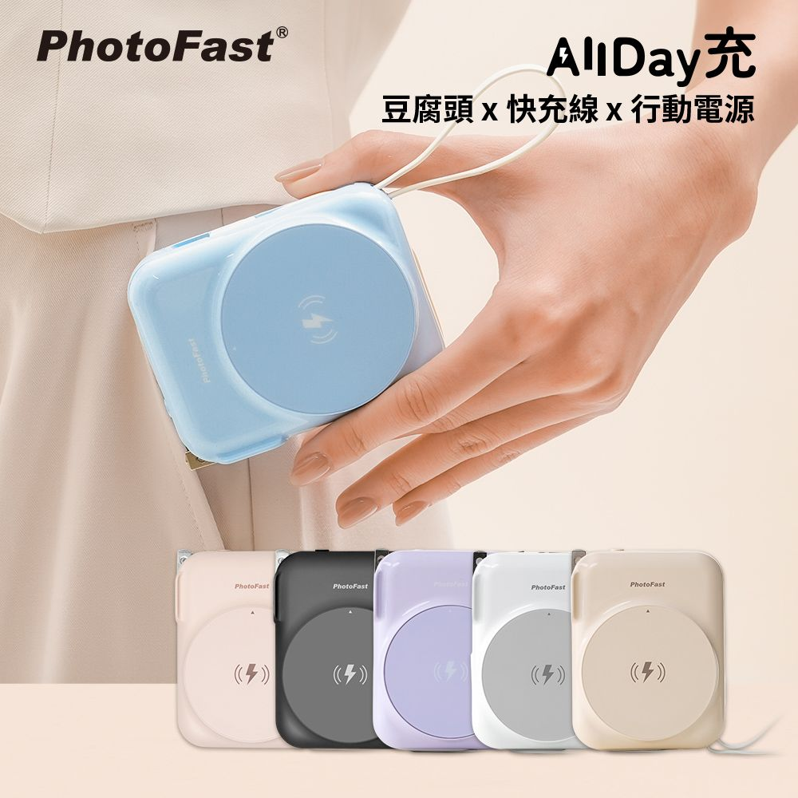
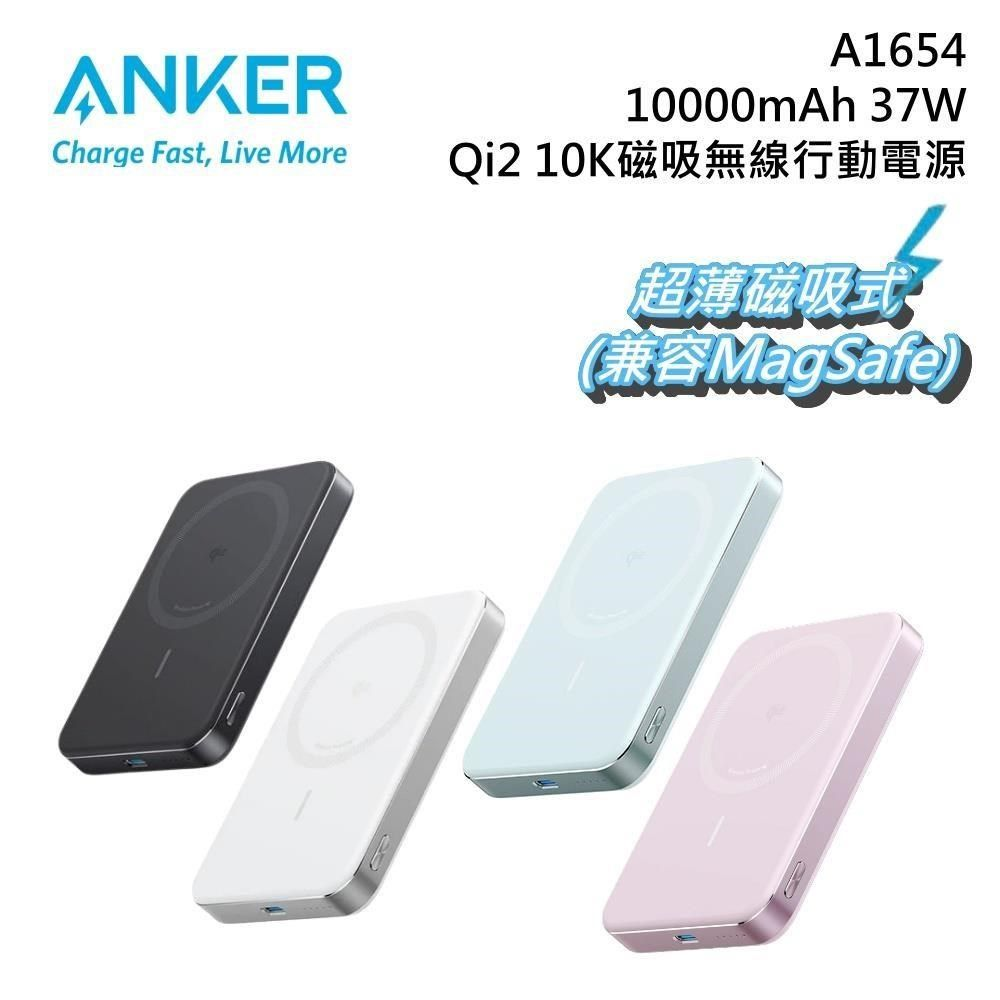
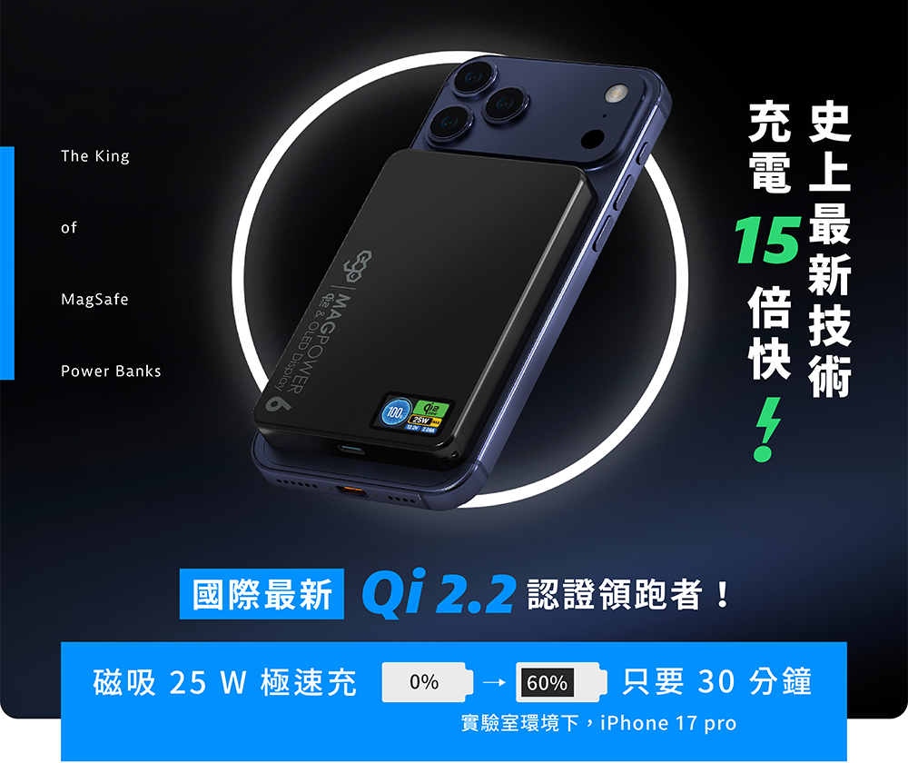

評分最高 8.5

PhotoFast AllDay充 Qi2 評分最高
8.5
/10
10000mAh・Qi2 15W 無線・C 20W / L 12W 有線
220g・NT$1,351~1,990・自帶 L+C 雙線＋AC 折疊插頭＋Apple Watch 無線充・保固 12 月・BSMI/NCC 認證
220g・NT$1,351~1,990・自帶 L+C 雙線＋AC 折疊插頭＋Apple Watch 無線充・保固 12 月・BSMI/NCC 認證
優點
- Qi2 正式認證，15W 磁吸無線
- 自帶 L+C 雙線，雙機完全搞定
- 內建 AC 折疊插頭（出國免帶插頭）
- 支援 Apple Watch 無線充電
- BSMI/NCC 雙認證
- 台灣品牌 PhotoFast，一機搞定蘋果全家桶
- 38.5Wh 飛安完全合規
缺點
- 保固僅 12 個月（非最長）
- 有線輸出 C 20W / L 12W 偏低
- 220g 偏重
- 售價浮動 NT$1,351~1,990
- 市場評測資料相對較少
推薦首選

LaPO Qi2 功能全面
7.5
/10
10000mAh・Qi2 15W 無線・22.5W 有線
240g・NT$1,580・自帶 L+C 雙線・保固 18 月最長・指環支架
240g・NT$1,580・自帶 L+C 雙線・保固 18 月最長・指環支架
優點
- 保固 18 月業界最長
- Qi2 正式認證
- 磁吸最強 13N
- 自帶 L+C 雙線
- 彩色 TFT 電量螢幕
- 指環＋支架雙用
- PTT/Dcard 長期高評價
缺點
- 240g 七款中偏重
- 有線輸出僅 22.5W
- 無折疊 AC 插頭
- 早期批次：插頭易起火花、轉軸殼裂開（新批次已改善）
- 無線充電時發熱明顯
台灣製造

POLYBATT T10 台製可靠
7.5
/10
10000mAh・磁吸 15W 無線・20W 有線
189g 最輕・NT$1,490・自帶 L+C 雙線・BSMI/NCC 雙認證・台灣製造
189g 最輕・NT$1,490・自帶 L+C 雙線・BSMI/NCC 雙認證・台灣製造
優點
- 台灣製造，BSMI/NCC 雙認證
- 189g 全場最輕
- 自帶 L+C 雙線
- 保固 1 年，品質穩定
- 無重大災情紀錄
- 多色系可選
- 電量數字顯示螢幕
缺點
- 非 Qi2 正式認證
- 有線最高輸出僅 20W
- Lightning 輸出僅 12W
- 品牌知名度較低
- 無支架功能

Anker A1664 MagGo 保固最長
7.0
/10
10000mAh・Qi2 15W 無線・30W 有線
200g・NT$1,990・保固 24 月最長・石墨烯散熱・⚠️ 無自帶線
200g・NT$1,990・保固 24 月最長・石墨烯散熱・⚠️ 無自帶線
優點
- 保固 24 月，業界第一
- Qi2 正式認證
- 30W 有線快充
- 石墨烯散熱，溫控不超 40°C
- 200g 輕巧
- Anker 品牌售後有保障
- A1664 不在 Anker 召回名單內
缺點
- ⚠️ 無自帶線（雙機需帶 2 條）
- 實際可用容量僅 5,500～6,500mAh（損耗 35~45%）
- 滿功率只能維持約 53 分鐘後降速
- 磁吸啟動需長按電源鍵
- 無充電指示燈
- NT$1,990 逼近預算上限

iWALK MAGO 最低售價
6.5
/10
10000mAh・Qi2 15W 無線・30W 有線快
218g・NT$1,190 最便宜・自帶 L+C 雙線
218g・NT$1,190 最便宜・自帶 L+C 雙線
優點
- NT$1,190 七款最便宜
- Qi2 正式認證
- 30W 有線充電快
- 自帶 L+C 雙線
- MagCool 溫控設計
- 可換線（換機後繼續用）
缺點
- ⚠️ 線頭偏大，厚手機殼易卡
- 長期使用接頭易鬆動
- 超過 15 分鐘後過熱降速
- 磁吸穩定度稍弱
- 保固 12 月偏短
- 台灣售後服務待確認
新加入

InfoThink 八合一MAX 多合一
6.5
/10
10000mAh・磁吸無線 15W・30W 有線・自帶 L+C 雙線
230g・NT$1,297起・台灣設計製造・5 台裝置同時充電・360° 支架＋AC 插頭
230g・NT$1,297起・台灣設計製造・5 台裝置同時充電・360° 支架＋AC 插頭
優點
- 台灣設計製造，BSMI 認證
- 自帶 L+C 雙線（非直插）
- 30W 有線輸出
- 支援同時充 5 台裝置
- 360° 旋轉支架
- 內建 AC 折疊插頭（出國免帶充電頭）
- Apple Watch + AirPods 無線充電
缺點
- ⚠️ 早期品管問題（Mobile01 負評）
- 磁吸易誤觸發（包包裡放電）
- 非 Qi2 正式認證
- 體積偏大 70×75×28mm
- PTT 有人質疑台製真偽
- 外觀保固僅限新品瑕疵
超出預算

EGO MagPower6 超薄輕量
6.0
/10
10000mAh・Qi2.2 25W 無線最強・C 30W 有線
158g 最輕・10.8mm 最薄・NT$1,869~2,190・OLED螢幕・BSMI/NCC 認證・⚠️ 無Lightning線
158g 最輕・10.8mm 最薄・NT$1,869~2,190・OLED螢幕・BSMI/NCC 認證・⚠️ 無Lightning線
優點
- Qi2.2 25W，無線充電業界最快
- 158g 八款最輕
- 10.8mm 超薄設計
- 半固態電池，石墨烯散熱
- OLED 電量螢幕
- N52 強力磁鐵
- BSMI/NCC 已通過認證
缺點
- ⚠️ 無 Lightning 線（iPhone 11 需自備）
- 售價 NT$1,869~2,190 超出預算
- 香港品牌，台灣僅嘖嘖群募購入
- 保固 12 月，但維修需寄回香港（自付運費）
- 無 AC 折疊插頭

TORRAS Ostand Qi2 追劇支架
5.5
/10
10000mAh・Qi2 15W 無線・20W 有線
200g・NT$1,490・⚠️ 無自帶線・360° 鋁合金旋轉支架
200g・NT$1,490・⚠️ 無自帶線・360° 鋁合金旋轉支架
優點
- 360° 鋁合金旋轉支架
- Qi2 正式認證
- 磁吸 12.9N 強力吸附
- 200g 輕巧
- 無重大品質災情
- 橫豎立放追劇最佳
缺點
- ⚠️ 完全無自帶線
- 雙機用戶出門需帶 2 條線
- 皮革背面易刮傷掉漆
- 有用戶反映比其他款更易發燙
- 有線輸出僅 20W（最低）
- 保固僅 12 月